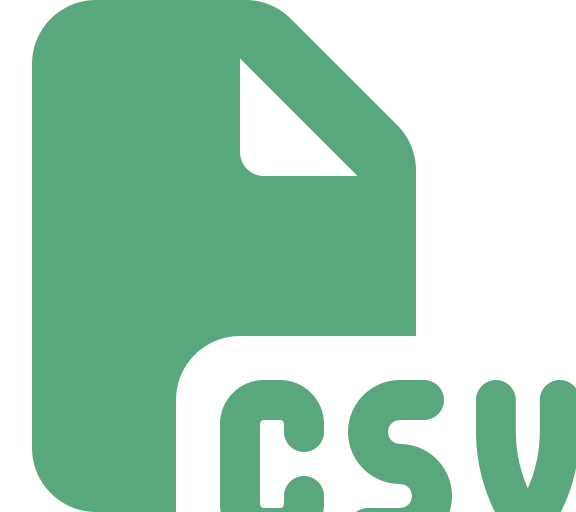

Portada
Universidad de Antioquia · Ingeniería de Sistemas · 2508307
Apertura

Transición
La sesión pasada aprendiste a capturar excepciones y, en particular, a usar try-with-resources para cerrar recursos automáticamente. Hoy ese mecanismo deja de ser teoría: leer y escribir archivos es exactamente el escenario donde más falta hace — un archivo abierto que nunca se cierra puede quedar bloqueado, corrupto o con datos incompletos.
Concepto
File: una ruta, no un contenidoFile (paquete java.io) representa la ubicación de un archivo o carpeta en el sistema — no su contenido. Con un objeto File puedes preguntar si existe, si es un directorio, o su ruta absoluta, pero para leer o escribir texto se necesita otra clase encima.
File archivo = new File("datos/notas.txt"); // ruta relativa
System.out.println(archivo.exists()); // ¿existe?
System.out.println(archivo.getAbsolutePath()); // ruta absoluta completaUna ruta relativa se interpreta desde el directorio donde se ejecuta el programa (puede variar entre IDE y consola); una ruta absoluta (ej. C:\Users\ana\notas.txt o /home/ana/notas.txt) siempre apunta al mismo lugar, sin importar desde dónde se ejecute.
Concepto
FileReader + BufferedReaderFileReader abre el archivo para lectura de texto; envolverlo en un BufferedReader agrega el método readLine(), que lee una línea completa a la vez y devuelve null cuando ya no hay más líneas.
try (BufferedReader lector = new BufferedReader(new FileReader("notas.txt"))) {
String linea;
while ((linea = lector.readLine()) != null) {
System.out.println(linea);
}
} catch (IOException e) {
System.out.println("No se pudo leer el archivo: " + e.getMessage());
}Concepto
Scanner sobre un FileYa conoces Scanner para leer del teclado (System.in); la misma clase también puede leer directamente de un File, con la ventaja de reutilizar métodos que ya conoces (nextLine(), hasNextLine(), nextInt()).
try (Scanner lector = new Scanner(new File("notas.txt"))) {
while (lector.hasNextLine()) {
String linea = lector.nextLine();
System.out.println(linea);
}
} catch (FileNotFoundException e) {
System.out.println("Archivo no encontrado: " + e.getMessage());
}Scanner sobre un archivo lanza FileNotFoundException si la ruta no existe — la misma excepción checked que ya viste la sesión pasada, ahora en un caso real.
Concepto
FileWriter + BufferedWriterFileWriter abre (o crea) un archivo para escritura; BufferedWriter agrupa la escritura en un búfer para hacerla más eficiente, con el método write(). A diferencia de println, write() no agrega salto de línea automáticamente — hay que escribirlo explícitamente.
try (BufferedWriter escritor = new BufferedWriter(new FileWriter("salida.txt"))) {
escritor.write("Nombre,Nota");
escritor.newLine();
escritor.write("Ana,4.8");
escritor.newLine();
} catch (IOException e) {
System.out.println("No se pudo escribir el archivo: " + e.getMessage());
}Por defecto, new FileWriter("salida.txt") sobrescribe el archivo si ya existe; con new FileWriter("salida.txt", true) se agrega al final en vez de sobrescribir.
Concepto
PrintWriterPrintWriter agrega a la escritura de archivos los mismos métodos que ya usas con System.out: print(), println() y printf() con especificadores de formato — útil cuando se necesita controlar decimales o alineación al escribir en el archivo, igual que en consola.
try (PrintWriter escritor = new PrintWriter(new FileWriter("reporte.txt"))) {
escritor.println("Reporte de notas");
escritor.printf("Promedio: %.2f%n", 4.35);
} catch (IOException e) {
System.out.println("No se pudo generar el reporte: " + e.getMessage());
}Concepto
try-with-resources aplicado a archivosBufferedReader, BufferedWriter, Scanner y PrintWriter implementan AutoCloseable — por eso, en todos los ejemplos anteriores, se declararon dentro del paréntesis del try. Java cierra automáticamente el recurso al salir del bloque, sin importar si terminó normal o por una excepción, evitando la fuga de recursos que abre esta sesión.
// Sin try-with-resources: hay que recordar cerrar manualmente,
// incluso si ocurre una excepción en medio de la lectura.
BufferedReader lector = new BufferedReader(new FileReader("notas.txt"));
try {
// ...
} finally {
lector.close(); // fácil de olvidar, sobre todo con varios recursos abiertos
}Concepto
| Excepción | Cuándo ocurre |
|---|---|
FileNotFoundException | Se intenta leer un archivo cuya ruta no existe (subclase de IOException) |
IOException | Falla general de entrada/salida: disco lleno, permisos insuficientes, archivo bloqueado por otro proceso |
Ambas son excepciones checked (vistas la sesión pasada): el compilador obliga a capturarlas o declararlas con throws, precisamente porque el sistema de archivos es un recurso externo que puede fallar por razones fuera del control del programa.
Concepto
CSV (comma-separated values) es un formato de texto plano para representar datos tabulares: cada fila es un registro, y dentro de cada fila los valores (columnas) se separan por comas. La primera fila suele ser el encabezado, con el nombre de cada columna.
nombre,nota,aprobado
Ana,4.8,true
Luis,2.9,false
Carla,3.5,trueAl ser texto plano (sin formato binario propietario), un CSV se puede abrir con cualquier editor de texto, hoja de cálculo (Excel, Google Sheets) o programa que lo lea línea por línea — por eso es tan común para intercambiar datos entre sistemas distintos.
Concepto
Concepto
Para convertir cada línea de texto en sus valores individuales, el método String.split(",") divide la cadena por cada coma y devuelve un arreglo de String.
try (BufferedReader lector = new BufferedReader(new FileReader("notas.csv"))) {
String encabezado = lector.readLine(); // se descarta o se guarda aparte
String linea;
while ((linea = lector.readLine()) != null) {
String[] valores = linea.split(",");
String nombre = valores[0];
double nota = Double.parseDouble(valores[1]);
System.out.println(nombre + " -> " + nota);
}
} catch (IOException e) {
System.out.println("Error al leer el CSV: " + e.getMessage());
}Contraejemplo
split(","): comas dentro de un valor// Fila real: una dirección que contiene una coma
Ana,"Calle 10, # 20-30",4.8
// linea.split(",") la parte en CUATRO valores, no en tres:
// ["Ana", "\"Calle 10", " # 20-30\"", "4.8"]Si un valor incluye una coma (como una dirección) o comillas para agrupar texto, split(",") lo corta en el lugar equivocado, porque no entiende la convención de comillas del formato CSV — solo separa por cada carácter , literal. Este es un problema real y conocido del formato; se resuelve con librerías especializadas de parsing CSV (que respetan comillas y comas internas), algo que queda fuera del alcance de hoy pero vale la pena tener presente antes de asumir que split(",") siempre es suficiente.
Concepto
try-with-resources por defecto, no cierre manual salvo que sea estrictamente necesario.archivo.exists()) cuando quieras dar un mensaje más claro que esperar a capturar la excepción.IOException — el disco puede estar lleno o sin permisos, y el programa debe poder informarlo.Interacción
En parejas: con el archivo notas.csv del ejemplo (columnas nombre,nota,aprobado), escriban un método que lo lea línea por línea con BufferedReader, calcule el promedio de las notas y lo escriba en un archivo promedio.txt usando PrintWriter.
8 minutos · usen try-with-resources en ambos archivos, y no olviden descartar el encabezado
Síntesis
File representa una ruta, no contenido; las rutas pueden ser absolutas o relativas.BufferedReader (readLine()) o Scanner sobre un File; para escribir: BufferedWriter o PrintWriter (con formato tipo printf).try-with-resources cierra automáticamente estos recursos; IOException y FileNotFoundException son las excepciones checked más comunes al trabajar con archivos.split(",") parsea líneas simples, pero falla si un valor contiene comas o comillas.Cierre
try-with-resources, capturando IOException/FileNotFoundException con mensajes claros.Con esto se cierra el bloque de archivos y errores de la Unidad 4 — el siguiente frente del curso profundiza en pruebas y verificación de código.